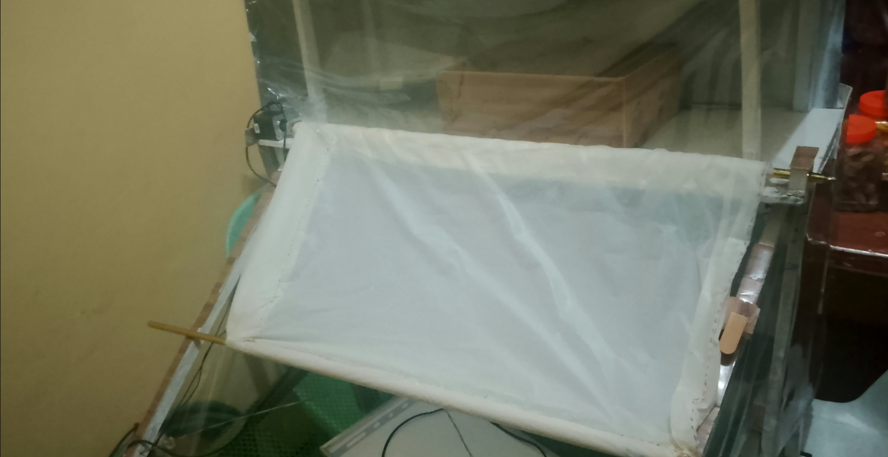

IoT and Capstone Project
SILONG: An Energy-Sustainable Smart IoT-Enabled Fish Drying Station
SILONG is an IoT-enabled, energy-sustainable smart docking station designed to modernize and protect traditional sun-dried fish (daing) processing in coastal Philippine communities. Built as a capstone project using an ESP32 microcontroller, NEMA 17 stepper motors, and salt-air corrosion-resistant framing, the system automates weather protection without altering the natural solar drying process. It features a Human-in-the-Loop (HITL) dual-layer decision framework that utilizes the OpenWeatherMap API for proactive rain forecasting via a custom Flutter mobile app, alongside edge-computed raindrop sensors that trigger a 10-to-15 second motorized retraction failsafe during sudden downpours. To ensure uninterrupted off-grid operation during coastal power outages, the station integrates a hybrid power setup comprising a 20W monocrystalline solar panel, a 10A PWM charge controller, and a 12V 7Ah rechargeable AGM battery.
Backed by Supabase for real-time telemetry streaming and managed through a Next.js administrative web panel, SILONG bridges traditional post-harvest practices with modern cloud and hardware architecture. By preventing post-harvest spoilage and preserving high-value drying batches, the prototype offers small-scale producers an economically viable solution with an estimated payback period of less than three months. Furthermore, the project advances key United Nations Sustainable Development Goals - specifically SDG 2 (Zero Hunger), SDG 7 (Affordable and Clean Energy), SDG 8 (Decent Work and Economic Growth), and SDG 9 (Industry, Innovation, and Infrastructure) - by reducing labor strain, enhancing food safety, and introducing localized technological innovation to artisanal fisheries.
Technologies Used
- Flutter SDK (Dart)
- Next.js
- React
- Node.js
- Embedded C
- C++
- Arduino IDE
- ESP32
- NEMA 17 Stepper Motor
- A4988 Driver
- DHT22 Sensor
- Raindrop Module
- Supabase
- PostgreSQL
- Deno Runtime
- OpenWeatherMap REST API
Members
- Building the Hardware: Ken Jimwill Baltero
- Frontend Development, Backend Development: Kim Benedict Sumilang
- Assisted Building the Hardware, Documentation: Pauline Ponon
- Assisted Building the Hardware, Documentation: John Emmanuel Topacio

Application Development Project
Hakbang: A Smart AI-Powered Career Tracker for IT Learners
Hakbang is an AI-powered mobile application designed to guide students and aspiring IT professionals through career exploration and skill development. Developed using an Agile framework, the system solves career indecision and lack of direction by delivering personalized IT career recommendations, curated learning roadmaps, interactive quizzes, gamified progress tracking with badges, and an AI-driven virtual career mentor.
The platform features a multi-tiered architecture: a cross-platform Flutter mobile client for students, an Express.js/Node.js REST API backend connected to a MongoDB Atlas cloud database, and an administrative web dashboard for system monitoring and content management. To deliver intelligent guidance, Hakbang integrates OpenAI's GPT-3.5-Turbo API, providing tailored career matching based on user skills, interactive Q&A mentorship, and resume feedback. Robust security measures - including bcrypt password hashing, JWT-based authentication, and Role-Based Access Control (RBAC) - ensure secure user data management and system governance.
Technologies Used
- Flutter SDK (Dart)
- Node.js
- Express.js
- JWT
- Bcrypt.js
- MongoDB Atlas
- Mongoose
- OpenAI API (GPT-3.5-Turbo)
- Git
- GitHub
- GitLab
- Bruno
- Postman
Members
- Project Manager: Sam Richmond Go
- Data Analyst: Klein Arnie Ortega
- Front-End Developer: Jenrick Ambalong
- Back-End Developer: John Emmanuel Topacio